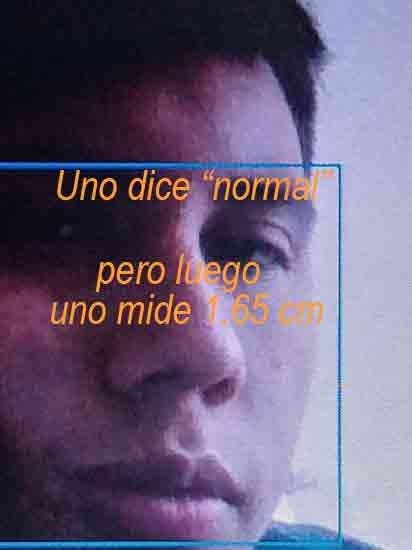

Bienvenido a mi blog, espero que puedas conocer mas de quien soy
Si necesitas regresar presiona aqui
Me llamo Juan Felipe, aunque, por lo general, me gusta que me digan Juan,
soy estudiante de Ingenieria de Sistemas, una carrera la cual me llamo la atencion
desde un inicio, tengo 17 años(casi 18), y una manera de definirme es como alguien,
que trata de desarrollarse en varias cosas a la vez, spoiler, no sale tan bien :(.
 Suelo ser alguien bastante tranquilo, y en ocasiones bastante callado, mas de lo normal de hecho
Suelo ser alguien bastante tranquilo, y en ocasiones bastante callado, mas de lo normal de hecho
disfruto de hacer cosas solo, aunque no por demasiado tiempo, dato re contra curioso, mido 1.65 cm
